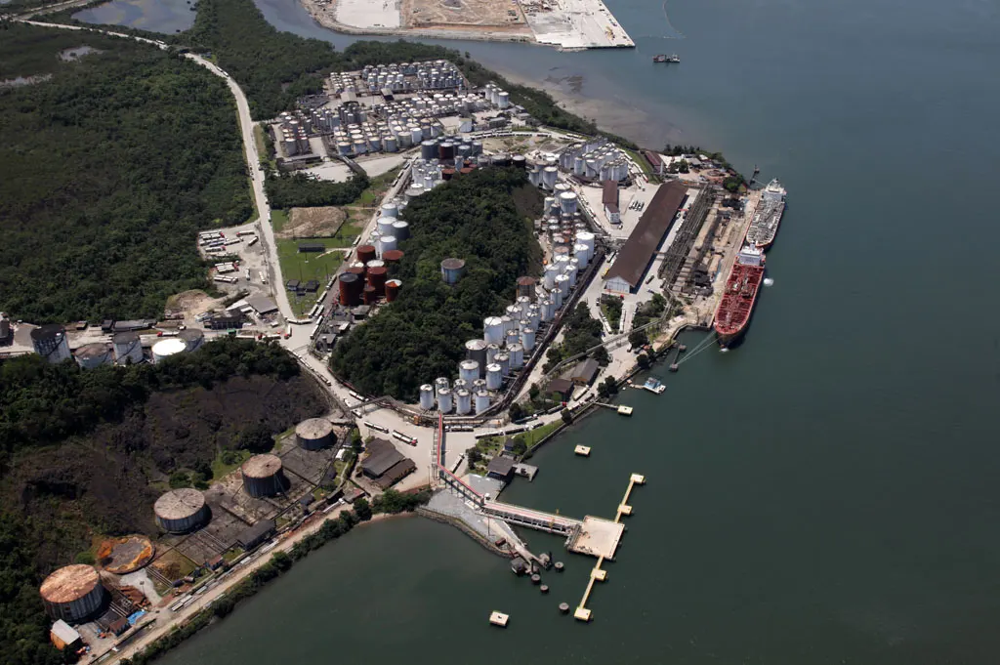

Port of Santos confirms cyberattack as some systems remain offline
Port authority says shipping and road access continue normally, while investigators assess the breach and whether data was accessed.

What happened
Brazil's Port of Santos Authority (APS) confirmed on November 10, 2026, that its systems suffered a cyberattack after outages began on Friday, November 6, following a power failure. In a statement reported by several outlets, APS said the scope of the attack and any possible access to data had not yet been established. Internet and telephone service returned on Monday, November 9, but its website and some internal systems remained unavailable. APS said vessel movements, cargo handling and road access continued without interruption through contingency procedures and the federal Porto Sem Papel documentation platform. A port security commission raised the protection level for access points as a precaution. Reports differed on whether the Federal Police had formally opened an investigation, so this article does not present that as established.
The Crow's analysis
The incident shows how disruption of administrative technology can affect a critical hub for Brazil's foreign trade even when physical cargo flows continue. Contingency measures and a separate federal platform helped maintain essential communications and approvals. Without published forensic findings, the attackers cannot be identified and claims about ransomware, losses or data theft remain unverified. Raising the port's security level does not by itself mean its operating systems were compromised.
Counterpoint
APS says no port services were suspended and recovery is proceeding gradually. Reports published at different times conflict over whether the Federal Police opened a formal inquiry: afternoon coverage quoted police saying they had not yet received documentation, while another report later said an inquiry had begun. That status requires direct confirmation. Neither responsibility for the attack nor a data breach has been publicly established.